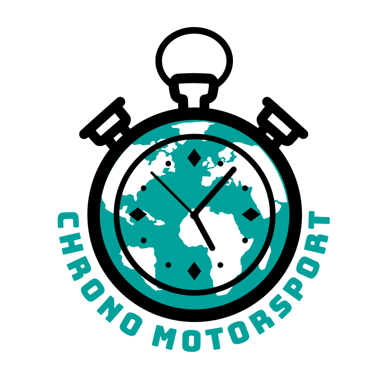

Assumptions. Modernist system (Archivo, one red accent, 0 radius, 2px rules, flush-left labels) stands in for the Chrono Motorsport tenant theme: primary teal #00a19b on toggle, hotspots, kickers and primary actions; the active corner is ink-black, matching the logo’s black ring. Layout images arrive from coaches with the racing line drawn in, roughly 10:7; shown as placeholders. UX guide applied: 48px+ tap targets, primary actions in the thumb zone, one task per screen, three levels deep, no hidden gestures (pinch-zoom has a visible hint), consistent back affordance. Content protection and dark mode are not visualised here.
1aTrack list — search, country filter, favorites first, indoor/outdoor and updated badges

Chrono Motorsport
Tracks
Search by name
{{ c.label }}
Favorites
{{ t.country }}
{{ t.name }}
{{ t.address }}
{{ t.kind }}Updated
All tracks · 8
{{ t.country }}
{{ t.name }}
{{ t.address }}
{{ t.kind }}Updated
1bTrack — Layout tab. Dry/wet toggle (outdoor only), zoomable image with numbered hotspots, selected corner as a peek bar in the thumb zone
Kartbaan Lelystad – Long
Talingweg 85, Lelystad · Outdoor · 10 corners
Dry
Wet
Pinch to zoom
Layout
Corners
layout image · dry · 2000×1400 racing line drawn in by coach
{{ h.n }}
Videos · 2
youtube thumbnail
{{ v.title }}
{{ v.meta }}
4
Selected
Corner 4 · Dry
Open
1cTrack — Corners tab. Same header, numbered list with 64px rows; the clip count tells the driver where video exists
Kartbaan Lelystad – Long
Talingweg 85, Lelystad · Outdoor · 10 corners
Dry
Wet
Wet content loaded
Layout
Corners
{{ c.n }}
Corner {{ c.n }}
{{ c.hint }}
{{ c.clips }}
Give feedback on this track · Wet
1dCorner detail. Condition badge, four stacked sections in order, clip buttons at the marker, previous/next pinned in the thumb zone
Kartbaan Lelystad – Long
Corner 4
Dry
4
Right-hander after the back straight. 4 of 10.
0{{ s.i }}{{ s.title }}
{{ s.body }}
{{ s.clip }}
{{ s.clipTime }}
Corner 3
Corner 5
Try next: "make the hotspots in 1b bigger for gloves" · "show 1d in track-day mode and Dutch" · "collapse the four sections in 1d into an accordion" · "dark mode set of all four"